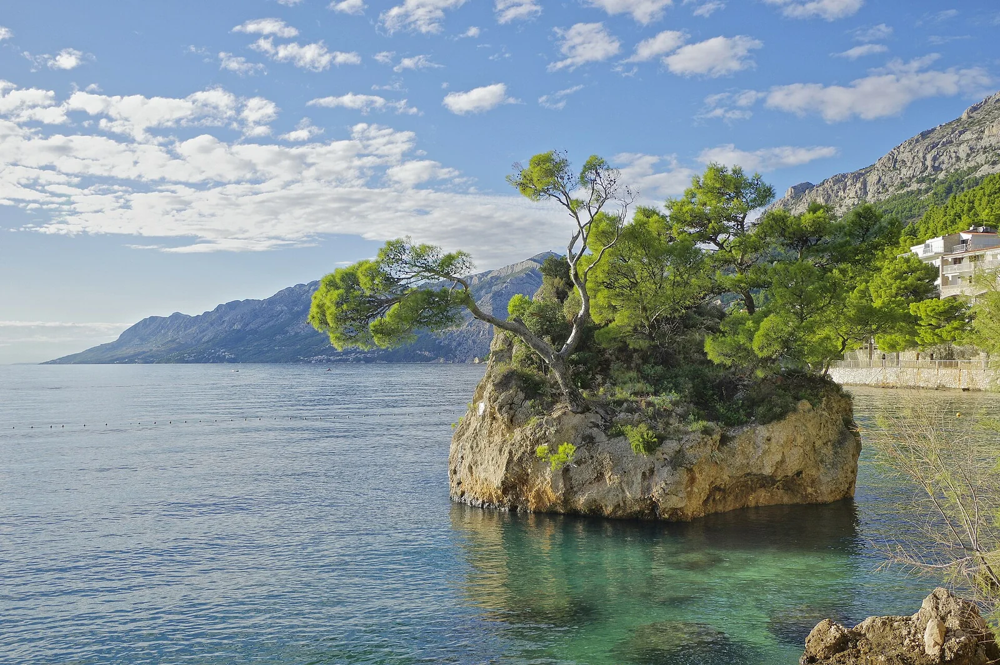

Brela — Punta Rata
Dalmatie, Croatie · kayak, snorkeling, baignade

La côte de Brela se déroule sous le massif du Biokovo. Autour de Punta Rata, les plages de galets et les pins bordent l’Adriatique.
- Lieu
- Dalmatie, Croatie
- Niveau
- Variable selon les conditions
- Activités
- kayak, snorkeling, baignade
- Type d'eau
- Mer / océan
- Coordonnées
- 43.37, 16.92 (position approximative du secteur)
Ouvrir dans Ocean Buddy Télécharger sur l'App Store
Source : Wikipédia · géographie du lieu.